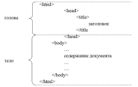

Форматирование текста
Это обычный абзац. Здесь мы демонстрируем базовые и расширенные возможности разметки текста:
- Жирный (b) и важный (strong)
- Курсив (i) и акцентированный (em)
- Подчёркнутый (u) и вставленный (ins)
Перечёркнутый (s)иудалённый (del)- Выделенный цветом (mark)
- Верхний индекс: x2 + y2 = z2
- Нижний индекс: H2O, CO2
- Мелкий текст (small)
Моноширинный код (code)Предварительно отформатированный текст (pre)
Списки: маркированный, нумерованный, список определений
Основные HTML теги
- <html>
- <head>
- <body>
Топ-3 языка программирования (нумерованный)
- JavaScript
- Python
- HTML / CSS
Словарь тегов (список определений)
- <section>
- Смысловой раздел документа
- <article>
- Самостоятельная, независимая часть контента
- <aside>
- Боковая панель или дополнительный контент
Изображения (локальные)

Аудио и видеоконтент
🎵 Расслабляющее аудио
📺 Внешнее видео с YouTube
Таблица: основные группы тегов HTML
| Категория | Тег | Описание / Назначение | Пример использования |
|---|---|---|---|
| 🧱 Семантика | <header> | Шапка документа | Вверху страницы |
| <nav> | Навигация | Меню (якоря) | |
| <main> | Основной контент | Содержит section | |
| <section> | Смысловой раздел | ID="text" | |
| <article> | Статья | Независимый блок | |
| <aside> | Боковая панель | Заметка | |
| <footer> | Подвал | Копирайт | |
| ✍️ Форматирование | <b> / <strong> | Жирный / важность | жирный |
| <i> / <em> | Курсив / акцент | курсив | |
| <u> / <ins> | Подчёркнутый | подч. | |
| <s> / <del> | Перечёркнутый | ||
| <mark> | Выделение цветом | маркер | |
| 📋 Списки | <ul> + <li> | Маркированный | Список блюд |
| <ol> + <li> | Нумерованный | Топ языков | |
| <dl> + <dt>/<dd> | Определения | Словарь | |
| 🎬 Медиа | <img> | Изображение | <img src="..."> |
| <audio> | Аудио | Музыка | |
| <video> | Видео | Трейлер | |
| <iframe> | Внешний контент | YouTube | |
| 📌 Итого: более 20 тегов в таблице. | |||
Анкета-опросник
Гиперссылки
Спецсимволы
© 2026 — HTML entities ♥